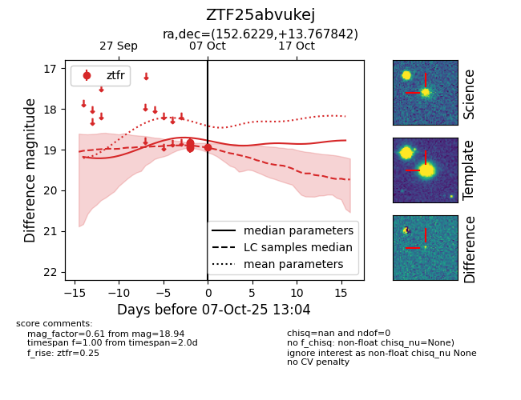
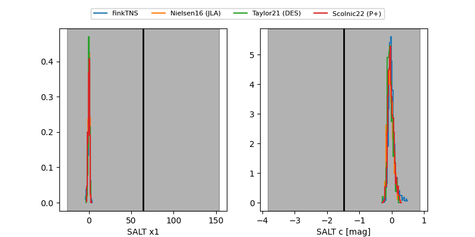

FINK: ZTF25abvukej
Lasair: ZTF25abvukej
ALeRCE: ZTF25abvukej
ZTF25abvukej (ztf,fink)
equatorial (ra, dec) = (152.6229,+13.76784)
galactic (l, b) = (224.3125,+50.21045)


last ztfr=18.94
5 ztfr detections